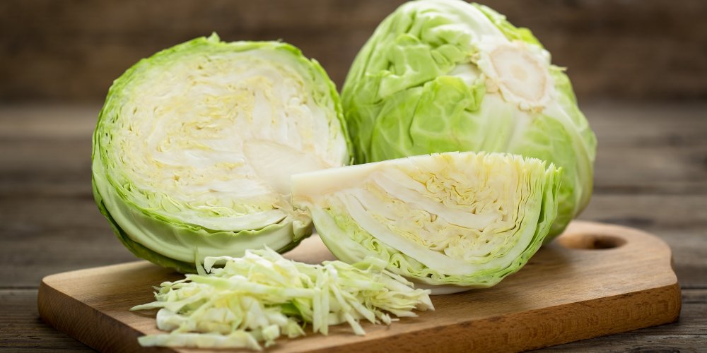

La Choucroute et son histoire
La choucroute, ce plat plein de saveurs, a une histoire très particuliere, venez la découvrir
Tout commence avec la construction de la Grande Muraille de Chine, au IIIe siècle avant Jésus Christ. Éloignés des villes et isolés, les ouvriers se nourrissent alors d’un chou fermenté et conservé dans la saumure. Aliment central, ils confèrent aux ouvriers force et robustesse, ce qui n’est pas étonnant lorsque l’on connait la teneur en vitamine C du légume.

Comment faire une bonne choucroute?
- Lavez vos choux
- Otez les trognons et réservez quelques belles feuilles.
- Au coupe-choux, réduisez en fines lamelles.
- Déposez une première couche de 5 cm d'épaisseur au fond de votre pot à choucroute et saupoudrez d'une pincée de sel, un peu de genièvre et de cumin.
- Tassez au pilon pour faire sortir le jus et éliminer l'air.
- Dégustez au bout de 1 mois, votre choucroute est prête ! Vous pourrez la conserver plusieurs mois, voire 1 an, si elle baigne constamment dans son jus. Elle n'en sera que meilleure.

Vous n'avez plus qu'a chauffer votre choucroute, y rajouter du shifala, et deguster!

Si vous n'avez pas de schifala chez vous, n'hésitez pas à en commander sur le site de la
boucherie Schmid
Si vous avez le temps, n'hesitez pas à répondre au questionnaire !